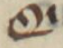
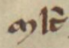
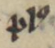
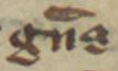

Chapter 2. An Approach to Editing Version T
Part 1
When the holy man Zozimas first encounters Mary the Egyptian in the desert, he struggles to see her clearly. She is “un ombre” (v.823), a shadow “qui estoit ou d’ome ou de feme” (v.824), who was either man or woman. She is the luxurious sinner, the ascetic penitent. In turns, she is clothed and stripped bare, revealed and concealed, as she sheds her life of vanity in favor of profound humility. This interplay between what is visible and knowable and what remains obscured defines not only Mary’s narrative but also the challenges of studying the text itself. Like Zozimas confronting Mary, modern readers must grapple with the text’s shifting contours: its narrative variations, scribal interventions, and material differences across the many manuscript witnesses. What does it mean to ‘see’ Version T clearly? What can we grasp by looking at each manuscript closely, and what do we learn about the complexity of this text and its transmission from considering the entire corpus?
In Chapter 1 of this dissertation, I reviewed the current literature surrounding digital practices for medieval texts, identifying key debates concerning digitization and digital editing and arguing for the adoption of digital editions to augment our ability to visualize medieval texts in ways that invite readers to experience textual variance as a meaningful aspect of interpretation. Building on that foundation, Chapter 2 details the specific methods I have employed to address the issues raised and produce a digital edition of Version T. Chapter 3 then demonstrates the benefits of a cross-copy reading practice that spans the extant corpus, facilitated by my own digital edition.
As discussed in Chapter 1, producing an edition of a medieval text requires the editor to make a multitude of decisions at every stage of the edition’s development,1 and no one method is perfect for every text.2 Some of these decisions are quite significant, major decisions — choosing the edition’s base text or determining the extent of the needed normalization of the text — but the majority of these editorial decisions are tiny, seemingly insignificant choices made over and over as the editor agonizes over every grapheme all in an effort to cleanly and accurately render a text for the reader.3 Most readers may never notice the alteration of a single letter even if the editor explicitly notes every single choice somewhere in the edition’s paratextual materials, but even tiny changes may have consequences for the reader that the editor may not be able to predict. Because a single editor cannot possibly anticipate the many end users’ plans for any given text — the reader may have only picked up the edition for pleasure, or the reader may be attempting to analyze a whole genre, culture, or moment in time — we editors should do all that is within our power to make our work as transparent and decipherable as possible.
Ironically, if an editor has edited well, their labor often becomes invisible, and this invisibility can leave the editor vulnerable to the accusation of laziness. One of the few constants across the ever shifting landscape of editorial theory is the charge that an editor has not done enough to satisfy the reader’s needs — that they have not made the ‘right’ kinds of interventions, not been sufficiently interpretive or reconstructive, not been decisive enough, not worked hard enough at eradicating all forms of error. While it is entirely fair to ask that editors be transparent and reflective about their decisions and meticulous in their craft, it is unreasonable to expect any single edition to satisfy every possible aim a reader might bring to it. Instead, an essential part of editing is the thoughtful delineation of boundaries — boundaries that weigh audience needs and textual history, that negotiate fidelity with usability, and that balance philological precision with broader scholarly goals.
The charge of editorial laziness has a long and varied history. Foulet and Speer observe that even Joseph Bédier (1864-1938), whose method of privileging a single manuscript over the reconstruction of a lost authorial text came to dominate mid-twentieth-century French editorial practice, was accused of inviting laziness. His rejection of the speculative genealogies of the Lachmannian method in favor of a conservative, manuscript-faithful approach led critics to claim that Bédier’s method constituted “an open invitation to laziness for any editor who wishes to avoid studying the manuscript tradition thoroughly” (Foulet & Speer 24). And yet, many Old French editors adopted the Bédier method, choosing “the safer course of reproducing the redaction of a single manuscript with few corrections, despite the criticism that favoring the scribe harms the author” (Foulet & Speer 28).
Vieillard and Guyotjeannin (2001) offer a more recent articulation of the laziness critique — this time aimed not at the single-manuscript method per se, but at any editorial approach that seeks too faithfully to replicate the visual features of a medieval manuscript witness.4 They write that to apply the method of the l’édition imitative indiscriminately across all types of texts “au motif que l’on accumulera ainsi des matériaux utiles à l’histoire des systèmes graphiques et des lectures médiévales” (14) is in fact “une paresse (le refus de prendre parti) et d’une illusion (celle d’un ‘rendu’ optimal et objectif des textes édités)” (14). In their view, editions that reproduce the peculiarities of the source — its lacunae, the original abbreviation signs, the manuscript’s punctuation, or its idiosyncratic use of capital letters — fail to take a strong editorial position and instead perpetuate the illusion of objectivity. But this dismissal underestimates the intellectual labor and future-facing potential of such editions. As Alpo Honkapohja has noted, “The main problem with normalisation is, however, that while it is necessary for some research questions, it also discards a large amount of potentially useful data, which makes other types of research impossible” (para. 5). The editorial impulse to normalize often erases important paleographic, linguistic and textual data — data that may not be of interest to all readers, but is absolutely essential for others, including codicologists, paleographers, and digital humanists. The desire to record manuscript features in an edition is not a form of naïve facsimilism; rather, it is a recognition that different audiences need different representations of the ‘same’ text. Vieillard and Guyotjeannin write, too, that they are convinced we might soon dispense with imitative editions as digital surrogates (digitized manuscripts) become more widely available,5 but this presumes an ideal access to high-resolution manuscript images — something that remains uneven in practice today — and the argument that digital corpora will soon make imitative editions obsolete seems to assume that such digital resources can be produced and maintained automatically. But twenty-four years after the publication of their Conseils pour l’édition des textes médiévaux (2001), digital editions still do not materialize on their own; they are the product of painstaking, thoughtful, human, editorial labor. What digital editions can do, however, is offer a capaciousness that print editions would struggle to match.
The on-going Old English Poetry in Facsimile (OEPF) initiative, which aims to produce a comprehensive digital edition of the entire Old English poetic corpus by 2030, serves as a productive response to Vieillard and Guyotjeannin’s skepticism. Like this dissertation’s edition — though on a considerably larger scale — the OEPF leverages digital technologies to advance key editorial values: respect for the material manuscript as the most meaningful source of information; accessibility, understood both as open availability of manuscript images and as the presentation of text in forms legible to modern readers; transparency of editorial intervention and human labor; and sustainability and reproducibility through the open-access publication of all project materials. Martin Foys, Director of the OEPF, writes that every modern re-production of medieval writing has an unavoidable distancing effect on the reader.6 But while the printed medium “encourages the homogeneity of production and privileges a singularity of form” (“Digital Editions and the Medieval Untext” 33) which ironically positions the modern print edition as “superior to any surviving medieval material source” (33), Foys argues digital technologies have “the capacity to reframe the presence of the material text to reduce the space between imagined ‘text’ and the material ‘un-text’” (34). Foys encourages his audience to “read editions on a continuum of textual interference” and positions the OEPF “as an editorial response to past print and print-equivalent editorial approaches that uses the functional capaciousness of digital textuality to reduce active interventions in the medieval, while still permitting a broader and more transparent access to the formal heterogeneity found within Old English poetry” (35). Much like the digital edition of this dissertation, the OEPF directs readers to the available digital images of surviving manuscript witnesses and features both edited transcriptions and ‘facsimile’ transcriptions of each manuscript witness, and like this dissertation, the OEPF practices a form of editorial conservatism that privileges “linguistic heterogeneity and description over standardization, conjectural reconstruction and grammatical and metrical prescription” (36), encouraging readers to engage with the manuscript record in all its complexity. The example of the OEPF, I believe, refutes the latest iterations of the editorial ‘laziness’ critique and stands as a large-scale analogue to my own project — similar in both methods and ethos.
As digital editors, we can adopt the ethos of data visualization experts to enhance our readers’ ability to recognize both the variance and continuity present in all our texts,7 seeing each manuscript copy as a subset of data in the larger data set that is the tangled history of any given text, allowing our readers to more easily comprehend to the fullest extent possible the text we are presenting without obscuring our countless editorial decisions (and without producing an illegibly complicated text).8 Otherwise, we may find that a regularly occurring outcome of our more traditional, constrained editions is a likewise constrained scholarly conversation. My goal, then, is to provoke curiosity: to urge readers to notice the choices both the medieval scribe and the modern editor have made, to notice the difference a unique line can make, to notice the precise sources of the questions we ask and the conclusions we perpetuate. And as we notice, we will adopt a greater capacity for accepting and working with the messiness of the manuscript record. In order to embrace the manuscript record more fully, we must first be able to see it more clearly.9
In what follows, I explain how my own digital edition has been developed to support such clarity. This dissertation provides a text that is useable not only for close reading but also for computational analysis by providing TEI-compliant transcriptions that are both human and machine readable.10 The edition featured in Appendix 2 (and described here in Chapter 2, Part 1) stages editorial decisions explicitly, presenting a spectrum of intervention across parallel columns, while the edition and translations of the T portraits (provided in Chapter 2, Part 2) further extends the accessibility of T to non-specialists in Old French. These materials are not only intended to document textual variation, but to invite readers into deeper engagement with the full manuscript corpus of Version T — to read not in spite of variance, but through it.
Methods: From Transcribing to Encoding (Appendix 2)
In preparation for the digital edition begun in this dissertation — both the extracted portraits (featured in Chapter 2, Part 2) and the substantial material in Appendix 2 — extensive groundwork was necessary. As detailed in Appendix 1, I engaged deeply with the manuscripts of Version T, visiting both digital repositories and reading rooms to gather the data and images that inform every stage of the transcription and editing process.11 This approach has ensured that the digital edition presented in this dissertation is firmly grounded in the material witnesses of Version T. From my work with these manuscripts, I have managed to transcribe and encode all accessible copies of Version T, with the exception of the British Library manuscript T-L.12 These encoded transcriptions are now publicly available as XML files in the GitHub repository marie-legyptienne.13 In the more immediate future, these XML files will contribute to the ongoing Lives of the Saints: The Medieval French Hagiography Project — a digital humanities project, directed by my advisor Amy Ogden and sponsored by The Institute for Advanced Technology in the Humanities (IATH), with the aim of making “easily accessible the information that is currently known about medieval French hagiography and to make evident the substantial holes in that knowledge” (Lives of the Saints, “Introduction”).14 But also by making the XML files of my encoded transcriptions open access, it is my hope that they may prove useful to other interested scholars with research goals that I cannot anticipate — perhaps for the purpose of distant reading or OCR training.15 As discussed in Chapter 1 (section 3. Ephemeral and Error-prone), I follow Whearty’s model of sustainability not as permanence but as potential: by making my data, methods, and decisions publically available, I aim to offer future researchers the very kind of “raw materials” (Digital Codicology 211) that may yet be reworked and reimagined in ways I cannot now foresee. Openly offering these files and their complete version history also furthers the goal of enhancing the transparency of the editorial process, preventing the proliferation of both the errors and silent emendations that create the “crisis of authenticity” (Digital Codicology 228) addressed in Chapter 1. With the use of Git for version control, anyone can see the choices I have made throughout the development of these files and of this digital edition from start to finish.
Prior to diving into the XML encoding though, I first transcribed each manuscript of Version T — working from both the digitized images of the manuscripts and my own collected images — into a basic Google Sheet,16 with each verse occupying its own cell.17 This early stage served as a no-code method that organized the texts in a manipulatable, shareable format, and by adding color coding to this spreadsheet to highlight the major narrative scenes as they appear across the manuscript copies, I was able to quickly recognize key areas of interest and direct the focus of my subsequent research:

Laying out all of the T copies this way side by side made it easy to visualize how these copies differ from each other in key places, and even by merely scrolling to the bottom of the spreadsheet, one could obviously see how dramatically these copies differ in length and therefore in content.18 This colorized spreadsheet served as the eventual design inspiration for the current presentation of the T portraits in this dissertation (Chapter 2, Part 2), with all of the copies arranged in parallel and with the addition of color highlighting to draw attention to the areas of interest discussed in the close reading in Chapter 3.
The transcription spreadsheet not only served as an initial organizational tool and later design inspiration but also as a quality control mechanism. By first producing this Google Sheet before pivoting to encoding the transcriptions of each manuscript copy as separate XML files using Oxygen XML Editor,19 I built into my work a quality control procedure that required me to review every letter of my initial transcriptions as I encoded them. During this second pass over of my transcriptions, I was forced to meticulously go back over my work, scrutinizing my initial transcriptions, and repeatedly referring back to my manuscript images. Although this process was time consuming, tedious work, it helped to improve the consistency of these important files, which now feature in this dissertation as reference material in Appendix 2. To facilitate this process, I also generated a digital transcription of Dembowski’s print edition — visible in the above screengrab as the left-most column in the spreadsheet — using OCR so that I could reference the edition more quickly when transcribing the manuscript copies.20 Although the OCR-generated digital transcription of Dembowski’s work was largely accurate, the software struggled to recognize the Old French text — despite reading from a cleanly edited print exemplar — and required extensive correction on my part to ensure its fidelity and usefulness as a working reference. I highlight this small step in my process as a reminder that digital tools can accelerate our workflows but by no means replace our scholarly judgement and labor: even automated processes depend on careful human verification and interpretive decision-making. As discussed in Chapter 1 (section 4. Automation and Augmentation), digital methods do not replace the skilled human labor essential to editing but instead augment it. Even tasks that may seem ripe for automation — such as transcription — depend on human judgment and intervention; as Lit reminds us, “transcription itself is not an objective task but can be considered an editorial task dependent on the editor’s erudition” (172).
Despite all this careful attention, Appendix 2 should be considered a good but faulty draft until eyes fresher than my own have reviewed its accuracy. In the meantime though, this material has already served as a useful laboratory for working out the fundamental strategies of this project and future iterations of this project as well as provide substantial material to probe for further literary research.
& indicates the presence of an ‘et’ symbol using an ampersand — are yellow.
Transcribing each copy of Version T has presented unique challenges, and encoding each copy has required thousands of individual judgment calls.21 Now, each copy of Version T is both human and machine-readable with the addition of the following tags:
- Folio numbers are indicated with tags like
<pb n="8r"/>where ‘pb’ stands for ‘page beginning’ and the ‘n’ attribute is equal to the manuscript folio number — in this case, folio 8 recto of copy T-F1.22 This tag helps situate the encoded text spatially within the source manuscript — information that can be useful for cross-referencing with images, analyzing page layout, or generally understanding the structure of the codex. - Columns are tagged with
<cb/>(“column beginning”). Although it was easy to tag columns in the XML files, actually rendering visible column breaks in Appendix 2 was an unanticipated technical hurdle to resolve. Nonetheless, the inclusion of these column breaks serves the valuable dual purposes of emphasizing the manuscripts’ original layout and improving the readability of each copy. - Verses are tagged with the start and end tags
<l>and</l>, and line breaks as they appear in the manuscript are tagged with<lb/>.23 In every copy except for T-B and T-F1, the ends of each verse align with the line breaks in the manuscript. But in T-F1 in particular, the disruption of individual words by line breaks in the manuscript causes the technical issue of irregular nesting, which can invalidate the XML file.24 This small issue demonstrates one of the technical limits of TEI guidelines in electronically representing the complexities of medieval manuscript documents, which were never designed to conform to digital logic.25 - Decorative elements such as the large floriated first letters of each copy are tagged with
<emph>for ‘emphasized.’ The initial letter from the XML file for copy T-A, for instance, is tagged like this:<emph n="6" rend="floriate">O</emph>where the ‘n’ attribute equals ‘6’ because the initial ‘O’ is six ruled lines tall in the manuscript and the style of the initial is ‘floriate.’ In Appendix 2, these letters are rendered proportionally to their appearance in the source manuscript. Rendering this sort of decorative element helps to catch the digital reader’s eye in the same way that such initials catch the manuscript reader’s eye, drawing attention to the beginnings of new sections of the narrative and to the unique features of each manuscript. - Proper names are tagged with
<name>and the attribute ‘type’ to indicate if the proper name refers to a ‘character,’ ‘saint,’ ‘god,’ or ‘devil.’ For example, in the eleventh verse of T-A, Mary’s name is tagged like this:<name type="saint">Marie</name> - Editorial interventions have been tagged as
<choice>elements so that both the original text of the manuscript (<orig>) and the regularization of the text (<reg>) can be encoded together, enabling a more dynamic rendering of the text in the digital edition. This tagging has been used to indicate interventions such as spelling regularization and the defining of word separation with spaces or the addition of apostrophes. For example in the fourth verse of T-F1, the word ni is actually the contraction n’i (a blend of ne and i) and has been tagged like this:<choice><orig>ni</orig><reg>n'i</reg></choice> - The expansion of abbreviations is another editorial intervention that has been more precisely tagged in all of the XML files using
<abbr>and<expan>. Consider the word seignors from the first verse of T-F1 which appears abbreviated in the manuscript as seigñs. The word has been encoded with both the original appearance of the word and its regularization:<choice><abbr><orig>seigns</orig></abbr><expan><reg>seignors</reg></expan></choice>
The present tagging method could easily be scaled up or down in complexity to suit one’s project goals, but I chose to follow the Lives of the Saints structure to ensure my files would be compatible with that project, and by choosing not to overcomplicate that tagging strategy, this method is easily reproducible by scholars who simply want to produce a machine-readable, edited transcription of their text.26 As I argue in Chapter 1 (section 3. Ephemeral and Error-prone), reproducibility is a key element in the sustainability of any digital initiative.
Reproducibility was likewise a key motivating factor in determining how best to display the R code that processes the XML files and renders them into the digital edition presented in this dissertation. I wanted to make this technical information accessible without overwhelming readers who may be less familiar — or simply less interested — in the coding that underlies the edition. At the same time, transparently presenting the code serves as a reminder that what readers encounter here is the result of an extensive editorial process, not an unmediated medieval text. Accordingly, each page of the edition includes a dropdown tab labeled ‘show the code,’ which reveals the underlying R chunks,27 and again, the complete codebase is available in the GitHub repository of this dissertation (https://github.com/leeloren/dissertation). As Lit argues, sharing the source code of our digital humanities projects is an ethical imperative that — in addition to promoting the transparency and accessibility of our work — prevents its fossilization (118). Open access to this project’s code enacts the vision of sustainability articulated in Chapter 1: sustainability understood not as permanence, but as the ongoing potential for our work to be examined, revised, and extended by others.
Building on this commitment to transparency and reproducibility, Appendix 2 of this dissertation uses the XML encoding and R code to implement a multi-column layout that displays each manuscript copy of Version T in full, featuring varying levels of editorial intervention presented in parallel. This layout is designed to allow readers to more easily observe the transformation of the text through the editorial process and to highlight the decisions made in adapting the text for a modern audience.28 In doing so, it helps address the “crisis of confidence” (19-28) that Foulet and Speer identify as a persistent reality in the history of Old French editorial practice, in which readers are reliant on the imperfect work of editors, and editors are in turn reliant on the imperfect work of scribes to approach any given medieval text. Each column in this layout is labeled to reflect the degree of intervention applied, ranging from ‘Nearly Diplomatic’ to ‘Minimal,’ ‘Intermediate,’ and ‘Extensive’:
- Nearly Diplomatic: For manuscripts T-B and T-F1, where the text does not conform to standard verse lineation, this supplemental column has been added, presenting the unique way each copy was formatted on the page — T-B with two verses per ruled line separated by a punctus and T-F1 in a continuous prose-like style with a punctus inserted to mark the end of each verse. These ‘Nearly Diplomatic’ columns present a transcription with the ‘Minimal’ level of editorial intervention but allow the additional benefit of helping the reader visualize the text as it appears on each manuscript page. With this layout, readers may more easily differentiate between decisions the copyists might have made based on the constraints of their page layout as opposed to their interpretations of the verse. T-F1 has been digitized, making it easier to cross-reference the edited transcript with the source manuscript, but T-B has not been digitized, so this column provides a particularly useful supplement to existing resources concerning T-B.29
- Minimal: This column closely mirrors the manuscript’s original text while implementing minor regularizations for clarity — regularizations that do not require situation-specific choices. Thus the letters u/v and i/j are standardized, and proper names like Marie and Deu are capitalized. Initial and final letter separation is not represented. However, word spacing and punctuation in this column match the original manuscript.30 At this stage of the project, the only abbreviation marks represented throughout Appendix 2 are ampersands (&) — standing in for all ‘et’ symbols — and the scribal abbreviation for both ‘con’ and ‘com’ (ꝯ).31 This minimal level of intervention allows the edited text to remain as faithful as possible to its material source while improving basic readability.
- Intermediate: In this column, all scribal abbreviations that have been tagged in the XML files are expanded.32 For example, the abbreviation
<abbr><orig>Bn</orig></abbr>in verse 5 of T-F1 becomes<expan><reg>Bien</reg></expan>, rendering as “Bien” in Appendix 2. However, all ‘et’ symbols have been left unexpanded since abbreviating this conjunction is still commonly done today and, therefore, does not impede the modern reader’s ability to read the text or a computer’s ability to extract information from this common abbreviation.33 Similarly, numbering is presented as written by the scribe either as Roman numerals or spelled out in words. Other editorial choices such as spacing, spelling, or punctuation are excluded at this level, which focuses solely on the expansion of abbreviations. - Extensive: The rightmost column of each page in the appendix includes the most extensive level of editorial intervention, regularizing word separation (with spaces and apostrophes) and — very rarely — regularizing spelling.34 The diacritical marks ‘é’ (‘e’ with an accent aigu) and ‘ç’ (‘c’ with the cédille) have been added where necessary in this column to help differentiate between homographs.35 Because I consider the insertion of other punctuation (e.g. periods, commas, quotation marks, question marks, exclamation points, etc.) to be an intervention on the level of translation, I do not add any other forms of punctuation here. I have, instead, added punctuation to the English translations of the T portraits available in the next part of this chapter. This ‘Extensive’ column aims to present the most legible version of the text to a modern reader, while the other columns clearly show the steps taken to create this final level of legibility.
The utility of breaking down the various interventions this way is to make explicit the nature and purpose of each editorial choice and to prompt reflection on the medieval form of the text. The ‘Minimal’ intervention level presents decisions based on recognizing common usage. For example in the first verse of T-A, the scribe has written the letter forms “vne” rather than “une.” Changing the scribe’s written ‘v’ for a ‘u’ does not change the easily recognizable meaning of this word or insert anything that is not already present in the manuscript and only serves to minorly facilitate this verse’s readability while still clearly showing the extent of the use of abbreviation. By contrast, the ‘Intermediate’ column adds what is absent — though implied to exist — in the manuscript copy. Abbreviations may be explicitly noted by the scribe or not, but scribal notation is not easily interpretable by most modern readers and so this column intervenes by contributing the missing letter forms; the ‘Intermediate’ column, however, still shows the original word spacing.36 Finally, the ‘Extensive’ column further shapes the text by adding features that a medieval reader would not have needed but that a modern reader would anticipate finding in a modern edition. These ‘extensive’ changes are far more ad hoc and depend a great deal on the judgement of the editor, but because features like apostrophes and capitalization are expectations of the modern reader, these sorts of intervention typically go entirely unnoticed. By distinguishing these levels of intervention so explicitly, the edition foregrounds the editorial process itself. It invites readers to notice the cumulative work required to render the medieval text legible to modern eyes and, in doing so, continually reminds them of the material manuscript that underlies it. In this way, the edition’s design enacts key principles articulated in Chapter 1: respect for the medieval source material and clarity around the human labor that reshapes it.
There is a certain timelessness to the desire to obscure human labors and intervention for the sake of augmenting a text’s perceived authenticity. Even the anonymous T-poet seeks to minimize their clear authorial intervention in order to convey a sense of truth and adherence to the source material of Mary the Egyptian’s legend.37 In the chapter “Editing Romance” of Holy Digital Grail: A Medieval Book on the Internet (2022), Michelle Warren discusses the problem of the unreliability of texts as they become abstracted from their sources through the mediating blackbox of editing. She makes it clear, however, that this issue is not new to digital media as print editors traditionally seek to augment the authenticity of their editions by minimizing the visibility of their own labor:
By design, digital platforms minimize their editorial contributions to bolster the authenticity of their texts. This, too, they inherit from nineteenth-century print platforms. ProQuest, for example, markets LION’s value based on the fact that texts have been ‘re-keyed to 99.99% textual accuracy.’ For the MS 80 texts, this promise echoes the murky circumstances of the Grail transcription in the 1850s: rekeyed by whom? … Digital platforms thus rely on a new generation of amanuenses. (217-218)
Warren’s observation underscores that the concealment of labor is not unique to the digital age but intrinsic to the long history of textual transmission. This edition, by contrast, resists that impulse, foregrounding the fact of mediation rather than obscuring it, insisting that authority arises from transparency, not invisibility.
The multi-column design of this digital edition highlights the editorial process’s complexity and challenges the notion that editions are mere ‘objective’ reproductions of texts. By presenting each copy of Version T at varied stages of intervention, this layout articulates editorial decisions, separating them into clear levels to encourage readers to engage critically with both the medieval manuscript and its modern transformation. The inclusion of links to the available digitized manuscript images further invites readers to return to the original source material. Ideally all of the manuscripts would be fully digitized so that a digital user could equally refer to the manuscript images and the digital edition as needed, but particularly in the absence of access to the manuscript and its surrogates, this digital edition provides valuable supplemental reference material. With greater clarity we may facilitate the persistent memory of the source manuscripts in the mind of the reader who should always consider the modern edition and translation an imperfect mediation of the source documents.
The primary aim of my text encoding strategy is to ensure that each editorial choice is clear and justifiable. Tagging is itself a process that forces us to very narrowly consider, label, and rationalize our choices as editors. Regardless of the editor’s choice of how to regularize the text, the fact that a revision has been made must be made obvious to the reader, thereby inviting curiosity and scrutiny ultimately to the betterment of the edition and our reading outcomes. As I argued in Chapter 1 (section 3. Ephemeral and Error-prone), when editions are designed for interrogation and interaction, manuscript studies as an endeavor becomes more reproducible and transparent but no less rigorous. The digital editing methods I have described here demand, rather than diminish, editorial effort. Far from inviting the ‘laziness’ critique once leveled against imitative or single-manuscript approaches, these methods set a higher standard of openness as we hold ourselves evermore accountable to the scrutiny of our readers.38 By meticulously tagging each intervention, the digital edition offered in Appendix 2 advances a higher degree of transparency and prompts a healthy level of scrutiny of my work, which — though carefully and thoughtfully executed — is sure to be colored by my subjective decision-making and unavoidable human propensity for error. This digital editing practice encourages readers to return to the source material of Version T whenever possible and to remain ever-critical of the influence of the modern editor.
Excerpt of T-E (Portrait 2, vv.613-702)
The selected verses below comprise the second portrait of Mary as she lives ascetically in the desert, a passage in which the T-E copyist inserts a few unique whole verses and word choices (vv.614, 650-652, 668, 676, & 700). I have selected the following passage of T-E to illustrate my digital editing methods on a smaller scale than the material featured in all of Appendix 2. I chose to isolate T-E here due to several unique aspects of this copy. First, T-E has received little attention as a witness of Version T because it is incomplete; approximately sixty verses are missing near the end of the narrative due to the mutilation of folio 117. If intact, T-E would provide the longest extant witness of Version T as well as the only miniature of Mary the Egyptian associated with T (now lost). Because T-E is a somewhat more difficult manuscript copy to read — featuring text that is highly abbreviated and inconsistent in word spacing — T-E more clearly demonstrates the benefit of my editorial approach which presents a transcription of T-E with increasing levels of editorial intervention. For this excerpt, I have also inserted special characters to represent the many scribal abbreviations present in the manuscript. These special characters have been selected in alignment with the recommendations of the Medieval Unicode Font Initiative (MUFI), a group of scholars and font designers committed to helping medievalists encode and display special characters found in medieval texts written in the Latin alphabet. Such special characters do not properly render in all fonts, but Junicode — a font developed by Peter Baker of the University of Virginia — has been designed for optimal compatibility with the MUFI guidelines. Thus, the Junicode font family has been applied to this entire dissertation project. The following directory specifies which codes have been used to render each of the special characters present in this excerpt of T-E, including screengrabs from the digitized manuscript for reference:
Directory of Special Characters:39
| Graphemes | Code | Description | Use |
|---|---|---|---|

|
ʼ |
modifier letter apostrophe | Qʼ → Que |

|
ˈ |
modifier letter vertical line | Qˈ → Qui |

|
̀ |
combining grave accent | mlt̀ → molt |

|
̅ |
combining overline | q̅ → que |

|
〃 | 〃 | bn̅ → bien |

|
〃 | 〃 | Qnt̅ → Quant |

|
̾ |
combining vertical tilde | m̾veille → merveille |

|
̍ |
combining vertical line above | poit̍ne → poitrine |

|
〃 | 〃 | q̍ → qui |

|
〃 | 〃 | p̍st → prist |

|
ꝑ |
Latin small letter ‘p’ with stroke through descender | ꝑ → par |

|
ꝯ |
Latin small letter ‘con’ | ꝯ → con or com |

|
ꝰ |
modifier letter ‘us’ | vꝰ → vos |

|
〃 | 〃 | plꝰ → plus |

|
 |
Latin abbreviations sign small ‘et’ with stroke | → & |

|
 |
combining abbreviation mark superscript ‘ra’ | dpel → drapel |

|
〃 | 〃 | gns → grans |

|
᷑ |
combining abbreviation mark superscript ‘ur’ | m᷑ → mur |
T-E, Paris, BnF Arsenal, 3516, ff.115r, col.d, line 13 - 115v, col.b, line 2
For reference, a full color digitization of the manuscript is available via Gallica HERE.
show the code
# Load the xml2 package
library(xml2)
#Path to xml file
path_xml <- "data/T-E.xml"
# function to create html from xml
convert_xml_to_html <- function(xml_file,
version_name = c("minimal", "intermediate", "extensive"),
min_line = NULL,
max_line = NULL) {
# Check if the version name is valid
version_name <- match.arg(version_name)
# WHITESPACE PRESERVATION: Apply placeholders before xml2 parsing
# Read the entire XML file as a single string (avoids readLines warnings)
file_size <- file.info(xml_file)$size
raw_xml <- readChar(xml_file, file_size)
# Replace whitespace between elements with placeholder tags
processed_xml <- gsub("(</[^>]+>)\\s+(<[^>]*>)", "\\1<SPACE/>\\2", raw_xml)
# Now parse the XML with placeholders in place
xml_file <- read_xml(processed_xml)
# Extract both <l>, <cb>, and <pb> elements
lines <- xml_find_all(xml_file, "//text//l | //text//cb | //text//pb")
# Initialize an empty list to store the processed lines
processed_lines <- list()
# --- NEW: state for folio handling and range tracking
line_count <- 0
in_desired_range <- FALSE
last_folio <- NULL # most recent <pb n="..."> seen (always recorded)
folio_emitted <- FALSE # ensure we only inject the prelude folio once
need_prelude_folio <- FALSE # signal to inject just before first kept line
# Function to process each element with whitespace preservation
process_line <- function(line) {
# Handle page breaks: always record latest folio, render only if in-range
if (xml_name(line) == "pb") {
last_folio <<- xml_attr(line, "n") # record regardless of range
if (!in_desired_range) return(NULL) # do not render until we're in range
return(sprintf("<div class='folio-number'>%s</div>", last_folio))
}
# Only increment line count and compute range for verse lines
if (xml_name(line) == "l") {
line_count <<- line_count + 1
# compute whether *this* line is in range
current_in_range <- if (is.null(min_line) && is.null(max_line)) {
TRUE
} else if (is.null(min_line) && !is.null(max_line)) {
line_count <= max_line
} else if (!is.null(min_line) && is.null(max_line)) {
line_count >= min_line
} else {
line_count >= min_line && line_count <= max_line
}
# detect first entry into range (FALSE -> TRUE)
if (current_in_range && !in_desired_range) {
need_prelude_folio <<- TRUE
}
in_desired_range <<- current_in_range
if (!in_desired_range) return(NULL) # Skip lines outside our range
# Add line number div every 5th line
line_number <- if (line_count %% 5 == 0) {
sprintf("<div class='line-number'>%d</div>", line_count)
} else {
""
}
} else {
# Non-<l> elements (<cb>, etc.)
line_number <- ""
if (!in_desired_range) return(NULL) # Skip non-line elements outside range
}
# Process emph elements (decorative initials)
emph_elements <- xml_find_all(line, ".//emph")
for (emph in emph_elements) {
# Get the initial letter text
initial_letter <- xml_text(emph)
# Get the size attribute (n) and style attribute (rend)
size_attr <- xml_attr(emph, "n")
style_attr <- xml_attr(emph, "rend")
# Create the HTML for the styled initial
styled_initial <- sprintf('<span class="decorative-initial %s" data-size="%s">%s</span>',
style_attr, size_attr, initial_letter)
# Replace the emph element with the styled HTML
xml_text(emph) <- styled_initial
}
if (version_name == "minimal") {
# Find all <choice> elements within the line
choices <- xml_find_all(line, ".//choice")
for (choice in choices) {
# Extract the text from the <orig> tag
orig_text <- xml_text(xml_find_first(choice, ".//orig"))
# Remove all children and set text directly
xml_remove(xml_children(choice))
xml_text(choice) <- orig_text
}
# remove any <reg> entirely
reg_elements <- xml_find_all(line, ".//reg")
xml_remove(reg_elements)
} else if (version_name == "intermediate") {
# Find all <choice> elements within the line
choices <- xml_find_all(line, ".//choice")
for (choice in choices) {
abbr_exists <- xml_find_first(choice, ".//abbr")
expan_exists <- xml_find_first(choice, ".//expan")
# First check if there's an intermediate tag
if (!is.na(abbr_exists) && !is.na(expan_exists)) {
intermediate_node <- xml_find_first(choice, ".//expan/intermediate")
if (!is.na(intermediate_node)) {
# If intermediate exists, use its text
text_to_use <- xml_text(intermediate_node)
} else {
# If no intermediate, use reg text
text_to_use <- xml_text(xml_find_first(choice, ".//expan/reg"))
}
xml_remove(xml_children(choice))
xml_text(choice) <- text_to_use
} else {
orig_text <- xml_text(xml_find_first(choice, ".//orig"))
xml_remove(xml_children(choice))
xml_text(choice) <- orig_text
}
}
# remove any <reg> entirely
reg_elements <- xml_find_all(line, ".//reg")
xml_remove(reg_elements)
} else if (version_name == "extensive") {
# remove <orig> entirely
orig_elements <- xml_find_all(line, ".//orig")
xml_remove(orig_elements)
# collapse <choice> to <reg>
choices <- xml_find_all(line, ".//choice")
for (choice in choices) {
reg_text <- xml_text(xml_find_first(choice, ".//reg"))
xml_remove(xml_children(choice))
xml_text(choice) <- reg_text
}
}
# Remove <lb/> tags entirely
lb_elements <- xml_find_all(line, ".//lb")
xml_remove(lb_elements)
# Replace SPACE placeholder elements with actual spaces
space_elements <- xml_find_all(line, ".//SPACE")
for (space_elem in space_elements) {
xml_text(space_elem) <- " "
xml_name(space_elem) <- "span"
xml_attr(space_elem, "class") <- "space-marker"
}
# Extract text
line_text <- xml_text(line)
# Clean up extra whitespace but preserve intended spaces
line_text <- trimws(line_text)
line_text <- gsub("\\s+", " ", line_text)
# Return line with number if applicable
return(sprintf("<div style='line-height: 1.2;'>%s%s</div>",
line_number, line_text))
}
# Process each line and wrap with <div class='column-break'> at each <cb/>
for (line in lines) {
processed_line <- process_line(line)
if (!is.null(processed_line)) {
# --- NEW: inject the folio that immediately precedes the first kept line
if (need_prelude_folio && !folio_emitted && !is.null(last_folio)) {
processed_lines <- c(processed_lines,
sprintf("<div class='folio-number'>%s</div>", last_folio))
folio_emitted <- TRUE
need_prelude_folio <- FALSE
}
if (xml_name(line) == "cb" && in_desired_range) {
# Add a closing </div> for the previous column and an opening <div> for the new column
processed_lines <- c(processed_lines, "</div>", "<div class='column-break'>")
} else {
# Process the line and add it to the current column
processed_lines <- c(processed_lines, processed_line)
}
}
}
# Process lines and wrap in edition-text div
formatted_text <- paste(c("<div class='edition-text'>", processed_lines, "</div>"), collapse = "\n")
cat(formatted_text)
}
# PRINT "MINIMAL" VERSION
convert_xml_to_html(
xml_file = path_xml,
version_name = "minimal",
min_line = 613,
max_line = 702
)
# PRINT "INTERMEDIATE VERSION"
convert_xml_to_html(
xml_file = path_xml,
version_name = "intermediate",
min_line = 613,
max_line = 702
)
#PRINT "EXTENSIVE" VERSION
convert_xml_to_html(
xml_file = path_xml,
version_name = "extensive",
min_line = 613,
max_line = 702
)Minimal
Intermediate
Extensive
Part 2
Appendix 2 of this dissertation offers more than 7,500 transcribed and encoded verses of Version T for the digital reader to consider, but to best serve the arguments of the dissertation, I have extracted Portraits 1 and 2 as case studies.40 Focusing on these passages and enhancing their presentation with visualization methods demonstrates more effectively the value of reading closely across the manuscript copies. As discussed in the Introduction to this dissertation (in sections ‘Why Version T?’ and ‘Cross-Copy Reading & The Difference It Makes’), most scholars rely on Dembowski’s print edition, which privileges copy T-A as its base text. This dependence has led to the relative neglect of the other T manuscripts and, consequently, to narrower interpretations of Version T. The digital presentation of the T portraits offered here in Part 2 of Chapter 2 instead promotes a cross-copy mode of reading, allowing readers to engage more readily with the full manuscript corpus — a practice I go on to model in Chapter 3. The remainder of this chapter details the technical methods used to render the T portraits digitally, including the design strategies employed to visualize textual variance across the copies. These visualizations make plain the forms of variation that print editions tend to obscure and advance the goal of accessibility as articulated in Chapter 1 (section 2. (Im)material and (In)human): accessibility understood not merely as the physical availability of source materials but as their intellectual legibility to a broader range of users.
In their guide On Editing Old French Texts (1979), Foulet and Speer note that the reader of any Old French text should always bear in mind that “in all likelihood, what he is reading is not actually the author’s composition but the result of hundreds of editorial decisions” (xv), and they sympathize with the editor who has the difficult task of formulating hard rules when each text offers special cases requiring unique treatment, “Handling such problems as variants and emendations calls for informed but necessarily subjective judgments” (xv).↩︎
Like Foulet and Speer, Edmund Campion encourages textual scholars to consider the editing of literary works to be, “both an art and a science. No single theoretical method is necessarily applicable to all texts. Textual scholarship requires critics to use both their judgment and their technical training” (434).↩︎
The reader is, ideally, not a passive recipient of an edition. Foulet and Speer argue, “Some acquaintance with the historical dimension of editing is essential for both the reader of an edited text, who needs to evaluate the editor’s work accurately, and for the prospective editor, who must be able to weigh thoroughly the consequences of the myriad decisions he will have to make” (1-2). Since subjective decisions are unavoidable, the editor, then, has the responsibility of doing all that is reasonably possible to provide the reader with enough information that the reader will be able to “make up his own mind” about the editor’s decision making process (Foulet & Speer 32).↩︎
While Vieillard and Guyotjeannin (2001) are skeptical of an editing practice that seeks to faithfully represent the contents of manuscripts to readers, Foulet and Speer (1979) suggest an openness to more “pragmatic eclecticism” (30) in methods among non-French editors in the later half of the twentieth century: “In passing, it is curious to observe that the more adventurous and judgmental methods for handling texts in the post-Bédier period have often been practiced by scholars from outside the hexagon of France. Perhaps the French love of system and clarity favors the best-manuscript edition as the only logically consistent method left to us” (38). Both Bernard Cerquiglini and Foulet and Speer connect the history of editorial trends to matters of identity and politics. Cerquiglini characterizes Gaston Paris’s (1839-1903) introduction of the Lachmannian editing method — a method “conçue par l’ennemi germain” (78) — in France in the late 1860s on the threshold of the Franco-Prussian War as a “fracas” (78) and an “Acte d’audace et double importation” (78). But Cerquiglini explains that it was despite Paris’s own “prussophobie” (79) and dislike for Karl Lachmann — “Paris n’aimait pas Lachmann” (79) — that he introduced the scientific method to France; rather, Cerquiglini suggests that a young Paris was also motivated by a desire to prove himself in the wake of his father Paulin Paris’s (1800-1881) career as the first chair of medieval literature at the Collège de France “auquel il eut la chance douloureuse de succéder” (79). On this point, Cerquiglini concludes, “Il s’agit donc, maintenant, de lachmanniser vigoureusement la littérature médiévale française, et de montrer aux Prussiens (et à son père) que l’on fait bien mieux qu’eux” (81). As Foulet and Speer recount, in the wake of World War I, Joseph Bédier’s later position against the Lachmannian method was met with, “An unusual, if understandable, injection of overt postwar nationalism … from a Belgian, Maurice Wilmotte, who hailed the Frenchman’s projection of the positivistic method originally developed by Germans” (23). Perhaps as digital editing methods proliferate globally, we will all find some common ground concerning best practices, but editing methods will undoubtedly be forever influenced by the lived experiences of the editors.↩︎
“Nous sommes de plus convaincus que les potentialités ouvertes par la mise à disposition de bases textuelles informatisées et de corpus numérisé permettront très vite de dépasser le dilemme, en juxtaposant commodément plusieurs moyens de prendre connaissance des textes médiévaux: aspect physique des manuscrit et des actes originaux, éditions de travail, éditions accessibles à la lecture courante…” (Vieillard & Guyotjeannin 14).↩︎
“Every modern re-production of medieval writing imagines a relationship with the earlier material, medieval iteration of this writing, but modern editions, mediated through typographic technology, distance the reader from the historical form of the writing far more than they fashion a tangible relationship with it. The modern re-production of medieval writing effectively results in two productions: it produces a modern text, a technological and methodological surrogate for the medieval expression, and it also fashions the same medieval expression as an ‘untext’ — imagined, but for practical purposes non-existent in the eye and for the mind of the modern reader” (“Digital Editions and the Medieval Untext” 33).↩︎
Statistician and data visualization specialist, Edward Tufte, advocates for a welcoming of new methods, “See with fresh eyes. Do not go lazy into default models, justified by ‘we’ve always done it this way’ – words that end thought, censor deviations, block searches for alternatives. Nonetheless, many conventions and standards have got it right, or at least good enough, but fresh seeing and attempted remodeling can confirm their continuing righteousness” (9). By seeing with fresh eyes, we may both disrupt our weaker assumptions and affirm our more justified conclusions.↩︎
In favor of adopting digital editing methods for improved comprehension, Siân Echard suggests “computers might facilitate a new form of editing, one which could simultaneously show what is in medieval artifacts, while also making what is there, understood” (202). And although he is wary of the added layer of subjectivity introduced by the application of digital humanities methods (104), Mateusz Fafinski sees the great benefit of digital editions for improving transparency: “Paradoxically it was the arrival of digital facsimiles that allowed us to critically assess the old printed editions at a larger scale and see those problems. Before, the choices of the editors, while documented in the footnotes, remained transparent only to a degree. The text encoded in an edition was not authentic but it seemed so for many users because it often was the first (or even the only) point of contact with a source. Broadly available digital facsimiles have made it possible for us to see the ontological difference between the source and the edition more clearly. … The proliferation of digital editions, offering a practical framework for diplomatic and side-by-side single manuscript editions, is changing the very concept of the approximation-driven critical edition. This will, and already does, change the way we interact with historical sources” (100).↩︎
Tufte says it best: “Data visualizations are at their best when there is so much data that the only way to see it … is to see it” (60; Tufte’s ellipsis).↩︎
The Text Encoding Initiative (TEI) is a community of practice established to set and maintain standards for digitally representing texts in ways that preserve both their content and structure. In this context, ‘encoding’ a text means adding descriptive information (called ‘markup’) that identifies particular features of a document. The TEI guidelines provide a shared vocabulary of ‘tags’ — labels used for markup — that allow scholars to identify structural and semantic elements such as page and line breaks, abbreviations and expansions, proper names, and other textual or material phenomena. A ‘TEI-compliant’ transcription adheres to these guidelines, enabling both human readers and computer programs to interpret the encoded features consistently. The TEI guidelines are freely available online for anyone to use (https://tei-c.org/). This standard is widely used in digital humanities to support long-term accessibility, interoperability, and scholarly analysis of digital texts.↩︎
As I argued in Chapter 1 (section 1. Fetishism and Idolatry), digital projects tend to bring people into the reading room rather than push them from it.↩︎
I describe my obstacles to accessing T-L — the Queen’s funeral in 2022 and the cyberattack in 2023 — in the introduction of Appendix 1.↩︎
https://github.com/leeloren/marie-legyptienne; An ‘XML file’ is a type of plain text file that uses ‘Extensible Markup Language’ (XML) to structure and describe data in a consistent, machine-readable way. In the context of textual editing, XML files typically follow the TEI guidelines, and serve as the foundational source of digital editions, enabling both digital display and computational analysis. Scholars use XML because it is open (non-proprietary) and highly flexible, making it both a sustainable long-term format and a powerful tool for producing and sharing text-based data. ‘GitHub’ is a free, open-source online platform used to store, manage, and share versions of digital files — particularly files used in coding or digital projects. GitHub is built on the Version Control System ‘Git’ (previously defined in Chapter 1, section 3. Ephemeral and Error-prone) and allows users to track changes over time, collaborate with others, and make their work publicly available. GitHub is widely used by digital humanities scholars for its transparency, sustainability, and accessibility. It is supported by abundant documentation and a large, active user community, making it relatively approachable for novices and highly adaptable for long-term scholarly projects. The files of this dissertation project likewise exist in my publicly available GitHub repository called dissertation available here: https://github.com/leeloren/dissertation.↩︎
My training as a research assistant with the Lives of the Saints project has made this dissertation project possible, and my text encoding methods are in alignment with the Lives of the Saints methods to help ensure interoperability. By applying TEI guidelines, we are able to make our manuscript transcriptions machine-readable and generally more easily manipulable for electronic research purposes, but the adaptability of TEI can be both a benefit and a hindrance to larger-scale interoperability. Whearty provides a helpful summary of the history of TEI and its applications to manuscript studies: “The digital projects that beta-tested the TEI guidelines in the late 1980s and early 1990s are impressively broad in humanities discipline, national location, and temporal interest. They did not, however, include early encoding projects dedicated to medieval texts or textuality. Nor was TEI initially designed to serve the needs of book historians, codicologists, and other researchers interested in books as objects. Yet the extensibility of TEI and its potential usefulness in fulfilling the needs of manuscript researchers were almost immediately evident. … TEI’s limber encoding standards are a response to the variation in methods of manuscript description that exists within the field of manuscript studies. From the viewpoint of individual projects, and the long history of variation within manuscript studies, TEI’s flexibility is a strength: it allows each project to use TEI’s elements in the way that makes most sense locally. But from the viewpoint of a shared global manuscripts index, that same suppleness could be a serious challenge to easy metadata interoperability” (Digital Codicology 183-184).↩︎
‘Distant reading’ is a method of literary analysis that uses computational tools to study large bodies of text. The term describes an approach that identifies patterns, trends, or anomalies across a broad corpus, which might otherwise be difficult or impossible to detect through traditional reading methods. By producing TEI-compliant, XML encoded transcription files of the Version T copies, I am potentially allowing other scholars to include Version T in larger-scale analyses of medieval French or hagiographic literature. ‘OCR training’ refers to the process of teaching ‘Optical Character Recognition (OCR)’ software to accurately recognize and transcribe printed or handwritten characters from scanned images. OCR is increasingly used to convert digitized manuscripts and printed documents into searchable text, but it requires large sets of data to train on in order to improve accuracy. High-quality XML transcriptions like those included in this digital edition can serve as valuable training material to help OCR systems learn how to recognize medieval letterforms, thereby potentially accelerating our ability to produce even more useful transcriptions.↩︎
Google Sheets is simply a web-based spreadsheet program that allows users to create, edit, and share spreadsheets online. It is part of the Google suite of programs.↩︎
Similarly, the Roman de la Rose Digital Library (Rose DL) uses linked Google Sheets to organize and share the collection’s manuscript metadata. There are advantages to this practice such as the ease with which users may access and download this data without requiring any proficiency in coding or other technical skills, but there are also some limitations to this strategy. It is unclear, for example, who exactly populated these sheets with data and when the information was last updated as the Version History function of the spreadsheets is not currently available to the public. But the Rose DL does acknowledge the dynamic nature of this data, “This spreadsheet is a work in progress and will be subject to change” (“Extant Manuscripts”).↩︎
T-A, which is the base text of Dembowski’s edition, offers 1,526 verses; T-B is the shortest complete copy with only 1,327 verses; T-C includes 1,532 verses; T-D has 1,442; T-E has 1,488 legible verses, but T-E would be the longest copy were it not for the loss of some sixty verses due to cutting; T-L has approximately 1,350 verses; Fragmentary copy T-F1 includes the first 163.5 verses of the text; and fragment T-F2 includes only 38 verses.↩︎
Oxygen XML Editor is a professional software application used to create and edit XML files. It is widely used for scholarly editing projects because it offers built-in support for encoding standards like the TEI guidelines. Oxygen XML Editor is particularly helpful for its extensive validation capabilities — its ability to catch encoding errors and to check whether the file has been structured properly. Oxygen also provides user-friendly features such as syntax highlighting, auto-completion, and visualization tools, making it easier to write accurate and well-structured XML. However, Oxygen is not an open-source software and does require a paid subscription. I had access to Oxygen for this project through my position as a research assistant, but Oxygen is not totally necessary for this sort of project as any free text editor, such as Visual Studio Code (VS Code), could be used just as easily to produce and edit XML files.↩︎
At the time, I used the free mobile application iScanner, which is currently capable of extracting text from documents in twenty-three different languages. Using an OCR software better suited to old languages and historical documents, such as Transkribus, would probably produce better results but would still require human intervention. Transkribus is a “comprehensive platform for the digitization, AI-powered text recognition, transcription, and searching of historical documents” (Transkribus, “Frequently Asked Questions”), developed through two EU-funded research projects and now (since 2019) maintained by READ-COOP SCE, a cooperative of more than 200 institutions and private members that supports collaborative digital scholarship.↩︎
When determining the best course of action for particularly challenging verses, I often consulted Dembowski’s edition. If, for example, Dembowski provides a specific recommendation for how to expand an abbreviation or establish word separation in his paratextual notes, then I typically follow his lead. (In future iterations of this project, I will review these decisions.) If, however, he does not supply the verse in his variance notes — something he typically does not do if the verse only differs in terms of its dialect or spelling — then I consider the contextual evidence available elsewhere in the copy to determine the best choice. Because the digital edition of Appendix 2 displays a spectrum of editorial intervention, each of these decisions may be recognized by the reader verse by verse without requiring cross-referencing other paratextual notes.↩︎
An ‘attribute’ is a piece of additional information that appears inside a tag to provide even more detail about the element the tag describes. Attributes always take the form of a name-value pair, like n=“8r”, where ‘n’ is the name of the attribute and ‘8r’ is its value. Attributes help encode specific, structured information within a tag, making it easier for both humans and computers to interpret the file accurately.↩︎
Some XML tags simply mark a point in the text — like
<lb/>, which indicates a line break and does not enclose any content. These are called ‘empty elements’ and are written as self-closing tags. Other tags, like<l>and</l>, are used to wrap around content that belongs together — in this case, a single line of poetic verse. These are known as ‘container elements’ or ‘paired tags’, and they must always follow a strict hierarchical structure: one tag must be fully closed before another is opened. This structure allows software to read and interpret the document accurately, but it also creates challenges when features in the source text overlap in ways that do not fit neatly into this hierarchy.↩︎In XML, every tag must be properly ‘nested’ — that is, container tags must open and close in clearly ordered, non-overlapping sequence. For example, if one tag begins inside another, it must also end inside it, like a set of Russian stacking dolls. Irregular nesting, then, violates the rules of XML and causes the file to be invalid, meaning it cannot be processed by the software trying to read it.↩︎
Folio numbers in the Appendix 2 are rendered directly from the tags encoded in the XML files, but the numbering of verses for each manuscript copy is generated automatically through a line counting function built into the R code of this dissertation. (R is a free, open-source programming language commonly used for data analysis, visualization, and digital text processing. I used R in this dissertation to author the code that processes my XML files, preparing them for digital display.) The Rose DL offers a model for how to address the problem of numbering, citing, and cross referencing verses in variant manuscript copies by using a system in which narrative sections are numbered rather than their individual verses. It could be useful to adopt this method in future iterations of this digital edition.↩︎
Whearty describes the viable option of ‘crosswalks’ for addressing unavoidable issues like metadata incompatibility, “There never will be a single, universal metadata standard appropriate to all digital projects and objects, and so libraries, archives, and other cultural heritage institutions have developed best practices for taking information expressed according to one metadata standard and remaking it according to the rules and constraints of another. This begins with creating a ‘crosswalk’” (Digital Codicology 184-185). Though the methods I have used in encoding the T manuscripts for my project will likely not be perfectly compatible with the needs of future researchers with different aims, the fact that I have produced digital transcriptions is itself a massively helpful first step.↩︎
A ‘chunk’ is a block of code embedded within a larger document that can be executed to generate outputs such as the processed text of my XML files.↩︎
This method of using a multi-column layout to distinguish between the contents of the manuscript and the editor’s interventions is not without precedent. While Gaston Paris used scientific textual criticism to create a composite text for his edition of La Vie de saint Alexis (1872) — one of the first editions of Old French published using this method (Foulet & Speer 11) — Paris used a side-by-side method in his edition of La Vie de saint Léger (1872), presenting a more diplomatic transcription of the manuscript witness next to his extensively edited transcription. Foulet and Speer report Paul Meyer’s (1840-1917) misgivings toward the ‘scientific’ method, “Meyer particularly opposed the orthographical regularization of the Alexis, and he feared that, in the hands of imprudent editors, such techniques for altering the text of manuscripts could lead to ridiculous ends. By contrast, he commented favorably on Paris’s side-by-side presentation of the manuscript text and his critical reconstruction of the original for the Vie de saint Léger, which exists in a unique manuscript. Here, as [Henry] Nicol [(1845-1880)] urged, the reader can evaluate the editor’s conclusions for himself” (17). Paris’s different approaches for these editions may be explained, at least in part, by practical constraints: La Vie de saint Alexis is longer (625 verses) and has several extant copies, while La Vie de saint Léger is shorter (240 verses) and survives in only one copy, making Léger much easier to publish in print with the method Paris ultimately used. Digital editing removes many of the space limitations of print and allows editors today to extend Paris’s side-by-side model even further, presenting all manuscript copies in full with clarified levels of editorial intervention.↩︎
The case of copy T-B exemplifies the argument made in Chapter 1 (section 1. Fetishism and Idolatry) that digital resources supplement rather than supplant material ones. As described in Appendix 1, the physical manuscript of T-B (MS Canonici Misc. 74) is available for consultation in person in the Bodleian Libraries reading room, but most readers will never encounter it directly. At present, there are no widely available photographic reproductions of this manuscript — no digital facsimile, microfilm, or any other form of image available even for purchase — so the ‘Nearly Diplomatic’ transcription provided here offers detailed information about the structure of this copy currently unavailable anywhere else.↩︎
For example, copy T-B uses a punctus to separate the verses of each couplet; T-C uses a punctus to indicate the end of every couplet; and fragment T-F1 places a punctus at the end of every verse.↩︎
More abbreviation marks have been added to the excerpt of copy T-E featured below to demonstrate how it is technically possible to render special medieval characters in a digital edition. Future iterations of this project will include such special characters throughout.↩︎
Systematically encoding both scribal abbreviations and their expansions is essential not only for accurate transcription but also for enabling deeper forms of scholarly analysis. As Alpo Honkapohja argues in his review of digital approaches to manuscript abbreviations, these features are far more than incidental scribal shortcuts. Abbreviation practices vary meaningfully across time period, geographic region, text genre, and intended audience, and therefore, are incredibly useful for the dating and localising of manuscripts. Abbreviations can provide instructions on pronunciation norms in both Latin and vernacular texts (para. 44), and most crucially, abbreviation patterns can be used to help establish scribal profiles — a key tool in dating and localizing manuscripts (para. 45). Despite this potential, Honkapohja notes that most digital transcriptions still do not systematically encode abbreviation data, making it difficult to extract or analyze this information at scale. “In order to study abbreviations quantitatively, we need to count them somehow” (para. 50), and so, Honkapohja prescribes the sort of text encoding practice that I have applied to this dissertation: “Studying abbreviations quantitatively requires digital transcriptions that encode the forms of abbreviation as well as their expansions. While many earlier corpora were based on printed books, the situation is improving” (para. 55). Similarly, edited transcriptions do not typically include marginalia, which Adrien Quéret-Podesta (2020) argues may be useful for the dating and localizing of manuscripts. I have not included marginalia in the digital transcriptions for this dissertation — the T copies have almost no marginalia to speak of anyway apart from rubricator notes that I describe in Appendix 1. — but other similar projects might take the usefulness of encoded marginalia into consideration.↩︎
At this stage in the project, all ‘et’ symbols in Appendix 2 are represented using ampersands (&), but in the excerpt of T-E below, I have used the Tironian et(with a horizontal stroke) instead to more closely represent the manuscript copy. The Tironian et is used in the ‘Minimal’ and ‘Intermediate’ columns, and in the ‘Extensive’ column these ‘et’ symbols are replaced with ampersands to better meet the expectations of modern readers.↩︎
For example in copy T-A v.935, the scribe initially wrote “vull” instead of “vuel” and corrected their mistake by copying an ‘e’ over the incorrect first ‘l.’ My presentation of this verse as “vuel” in the ‘Extensive’ column and “vull” in the ‘Minimal’ and ‘Intermediate’ columns mirrors the scribe’s own correction process to align this word with its proper spelling found in the rest of T-A (vv.55, 243, & 1084). Dembowski chose to correct this verse too, but he has not indicated this scribal error and correction with any note to the reader. I, also, do not comment individually on such changes, but because each alteration may be recognized by reading across the multi-column format and referring to the digitized manuscript (where available), the reader may more easily notice these correction events and probe deeper if interested.↩︎
The decision to insert only the ‘é’ (‘e’ with an accent aigu) and ‘ç’ (‘c’ with the cédille) is somewhat conservative in approach, but is generally supported by the advice of both Foulet and Speer (1979) and Vieillard and Guyotjeannin (2001). Both describe the use of these diacritical marks to help avoid confusion between homographs, but Foulet and Speer note that — like all editing decisions — inserting accent marks is a subjective decision: “…it must be admitted that any one of these editorial intentions may at times run counter to some well-established convention” (67). Vieillard and Guyotjeannin likewise support the use of the accent aigu and reject the use of the accent grave and the accent circonflexe on any vowel (48). However, they advise that the ‘é’ is not necessary for the feminine past participle — ending in ‘-ee’ or sometimes ‘-eee’ or even ‘-ie’ in Picard texts — because the word in context makes its function and pronunciation clear enough (Vieillard & Guyotjeannin 49). There is less consensus though on the best use of the tréma: “The judicious use of the tréma for Old French texts has long been a perplexing problem” (Foulet & Speer 69). The tréma is primarily used to indicate meter and phonetics, and so, Vieillard and Guyotjeannin suggest that the rhyme and meter of verse texts “permettent un emploi plus large du tréma” (52), but they do provide a list of select cases in which the tréma may nevertheless remain useful in verse (52-53). Foulet and Speer also highlight the issue of publishing technologies influencing the editor’s decision to make use of the tréma or not: “In Romania, 52, 245-46, [Mario] Roques [(1875-1961)] declared that editors should avoid placing a tréma on the first vowel of oeor oé because printers do not always have an ö at their disposal. This piece of advice is followed by a confusing discussion of what to do once ö has been rejected. Nevertheless, the simplest course is to place the tréma on the o…” (72). Although digital editions largely alleviate this printing problem, I find the general lack of consensus on the use of the tréma to make its application too subjective and too prescriptive to be particularly useful. Foulet and Speer leave the door open to a more conservative approach to prevent discomfort for the modern reader: “It may be argued, in favor of Roques’s conservative approach, that the introduction of ‘signes diacritiques non usuels’ tends to give the reader who is not a phonetician the feeling that he is deciphering some kind of phonetic transcription instead of reading a literary text” (73).↩︎
The encoding model used in this edition relies on
<choice>tags to present all editorial interventions, showing both the original text of the manuscript (<orig>) and the regularization of the text (<reg>). This structure easily lends itself to a two-column display with the ‘original’ text beside the regularized text. However choosing to include a third ‘Intermediate’ column for this dissertation created the problem of overlapping types of intervention. For example, in v.646 of copy T-E, the abbreviated form “ql” must both be expanded (“quil”) and separated with an apostrophe (“qu’il”). To produce the appropriate intermediate-level presentation of this word — and other such similar cases where overlapping interventions occur — I have added<intermediate>container tags.↩︎In the first verses of the prologue, the T-poet calls on the reader to hear truth — and not a word of falsehood — in this story: “Oiés seignor une raison / ou il ne a se verté non / faite est & tote de verté / N’i a -i- mot de fausseté” (vv.1-4). And at the start of the first portrait description of Mary, the T-poet invokes the authority of a written source: “Si com ele est en escriture” (v.158).↩︎
Whearty’s Digital Codicology is more concerned with the digitization of manuscripts than matters of editing, but she does cite Maureen Jameson who asserts that mass digitization “fundamentally changes the status of the editor or paleographer… whose judgements are now exposed to wider scrutiny” (qtd. in Whearty 166).↩︎
For macron abbreviations involving vowels (ā, ē, ī, and ō), special character codes were not necessary.↩︎
Focusing just on these two passages still offers a substantial number of verses (726 in total) to consider. T-A offers 148 verses (60 in P1 and 88 in P2), T-B offers 132 (58 in P1 and 74 in P2), T-C and T-E each have 150 verses (60 in P1 and 90 in P2), and T-D offers 146 verses (58 in P1 and 88 in P2). Copy T-L has, of course, been excluded due to my lack of access to it, and the fragments have also been excluded as T-F1 offers only the first 10.5 verses of Portrait 1 and T-F2 does not offer any verses from either portrait. Ultimately though, it would be ideal to treat the full T corpus with the editing, translating, and styling attention I have paid to the T portraits here.↩︎
I have also styled the digital presentation of the book using CSS (Cascading Style Sheets) — a language used to control the visual appearance of HTML content, such as fonts, colors, spacing, and layout.↩︎
A similar, simpler alternative to Quarto is bookdown, which is an open-source R package — that is, a collection of prewritten functions and templates — built on top of R Markdown — a user-friendly document format that allows authors to combine narrative prose with chunks of executable R code in a single file. While bookdown allows users to create digital ‘books,’ it is far less interoperable than Quarto, requiring users to work exclusively in the programming language R.↩︎
The coloring and styling used for this page has been optimized for users with color blindness. For example, a red-blind user may have trouble distinguishing between the colors that have been used to annotate negated phrasing (blue) and color imagery (purple), but to address that difficulty, texture has been added to the blue negated phrasing annotations so that pattern rather than color may be relied upon to make this distinction clearer. Thoughtful design choices like these ensure both convenience for users without color blindness and genuine accessibility for users with it, allowing the edition’s visual cues to remain meaningful and legible to all sighted readers. While blind readers can access the full textual content of this dissertation through the use of a screenreader, more work is necessary to ensure that a screenreader would reconize and announce these color-based visualizations to the user, and future iterations of this project should take that design need into account. Accessibility here is both a technical and ethical priority.↩︎
Bryant argues that if digital editors want to present a fluid-text edition, they must consider “what can computers do for readers that books cannot” (146). Digital editions must be more than simply faster and more convenient (147); they must enable readers to visualize the revision process (148).↩︎
This effect is also applied to the text columns of Appendix 2, which appear to be in greater focus when hovered over by increasing the text’s opacity.↩︎
Bernard Cerquiglini, though, praises the computer’s ability to use this sort of complex fenêtrage to better visualize texts, answering long held editorial needs: “L’écran qu’élaborent et raffinent toujours plus les techniciens est à la fois dialogique (il offre une interaction constante du consultant et de la machine) et multidimensionnel (il permet la consultation conjointe, par fenêtrage, de données appartenant à des ensembles disjoints). Utilisant ces deux propriétés, on peut concevoir un type d’édition d’une œuvre médiévale, issue de cette réunion d’ensembles disjoints qu’est le codex, qui ne serait plus soumise à la structure bidimensionnelle et close de la page imprimée… Il est certain que l’on peut faire beaucoup mieux que les éditions en colonnes parallèles que nous avons citées, qui démultiplient un livre. Car c’est à la démultiplication des espaces textuels que procède l’informatique: en chacune des ‘fenêtres’ de l’écran apparaît une inscription conservée en mémoire; et cette inscription se dispose, se déplace, acquiert visibilité et privilège (rapprochements, effets de zoom, etc.). L’ordinateur, en tant qu’il est l’articulation d’une mémoire immense, de sa gestion instantanée et de sa visualisation multiple, répond aux besoins éditoriaux que nous avons relevés” (113).↩︎
Lit points to the potential for such digital editions that engage reader’s choice, “…so far it has been nearly impossible to edit a text as a ‘digital documentary edition,’ in which the reader can turn on and off manuscript witnesses to create particular readings that work for them, instead of relying on the one and only reading an editor offers through a traditional Lachmannian approach. A documentary edition requires a broad set of manuscripts with strong metadata concerning their origin. As the methodology is being fine-tuned in other fields, we will soon be able to profit from this approach” (Lit 99-100).↩︎
I reiterate here, as discussed at greater length in the Introduction (section ‘Why a Digital Edition of Version T?’), my response to Duncan Robertson’s call for a new edition of Version T that performs this laborious task on behalf of the reader: “Ideally, the reader should be spared the painful task of reconstituting them from lists of variants” (“The Anglo-Norman Verse Life” 41).↩︎
I am not the only medievalist enthusiastically filling this need. For example, during the COVID-19 lockdowns in 2020, Stanford Libraries, the crowdsourced transcription platform FromThePage, and the International Image Interoperability Framework (IIIF) Consortium launched the “La Sfera Challenge” — a friendly competition among teams of scholars to transcribe eight copies of Goro Dati’s fifteenth-century geographic treatise La Sfera. In her reflection on working with the copy Pryce MS P4, N. Kıvılcım Yavuz recounts the value of such efforts, “A collaborative transcription effort, such as the ‘La Sfera Challenge,’ allows us to discover more about a manuscript, especially compared to a solitary exercise, as there is more than one person asking similar questions and a group of transcribers discussing what is on the page.”↩︎